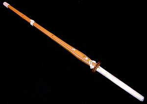
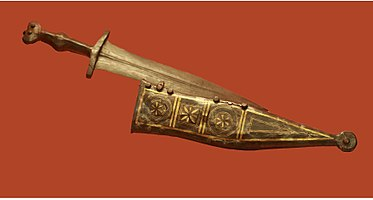
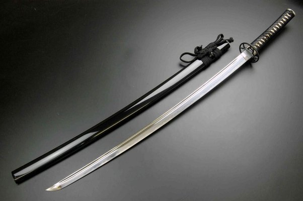
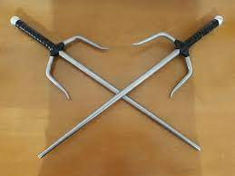
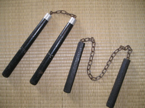

Home
Armas Brancas - Romana
Armas Brancas - Chinesa
Armas Brancas - Japonesa
Jitte
Uchigatana
Shinai
Armas Brancas - Gallery
Jutte
- É um kata do caratê originário do estilo Tomari-te, cujas raízes são encontradas na China, nos estilos derivados do estilo da garça branca, do templo Shaolin.

Shinai
- É uma espada de bambu, feita para se poder praticar artes marcais como Kendo e Kenjutsu, sem causar grandes lesões ao adversário.
Gladius
- É uma espada curta utilizada na Antiguidade, que os autores latinos chamavam ense.

Púgio ou pugião
- Era uma adaga, um punhal ou faca de dois gumes e lâmina larga triangular ou foliforme.

Katana
- É uma tradicional espada japonesa (日本刀) que foi usada pelos samurais do Japão antigo e feudal.

Sai (Adaga)
- A adaga Sai também é uma arma originária do antigo Kobudo de Okinawa.

Nunchaku
- É atribuida aos Chineses e sua criação perpassa por várias hipóteses.